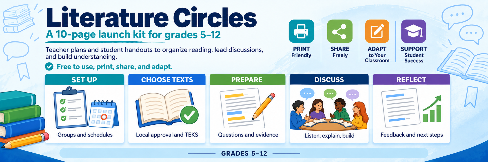

GRADES 5–12 · TEXAS ELAR · 10 SECTIONS
Literature Circles Launch Kit

A grab-and-go organization kit: choose a locally approved reading, form groups, schedule meetings, teach discussion routines, and check individual understanding.
Download full PDF (21 pages)Read, adapt, or print onlineRead: 5 ways to use this kitIncludes a complete Aesop practice reading, reusable student handouts, a grade/course TEKS map, and teacher guidance. Reciprocal Teaching supports comprehension; an optional Jigsaw adds expert lenses when the class is ready.
Sample planners by title
Worked and blank literature-circle planners for specific TEKS texts — a finished plan plus a completed student 3–2–1, with a matching blank companion. Titles span grades 5–12 (short stories, novels, a speech, a memoir), including paraphrase-only companions for copyrighted novels.
Optional student organizers
Adapted from Miguel Guhlin’s Notes Organizer v3: 3 ideas, 2 supporting details, 1 summary with questions and vocabulary; plus home-group Jigsaw notes, quick-writes, and individual synthesis.
Download organizers only (4 pages)Preview 3–2–1 and Jigsaw sheets
Completed organizer samples
Photorealistic examples show 3–2–1 expert notes and home-group Jigsaw reports for “The North Wind and the Sun.” Find them alongside the teacher guidance and after the blank organizers. Expand “Read the sample notes” online for a text version.
Inside the packet
- 1. Launch literature circles — Teacher
- 2. Choose and clear the reading — Teacher
- 3. Plan from the TEKS — Teacher
- 4. Run the launch and the cycle — Teacher
- 5. Our circle agreement and calendar — Group Handout
- 6. Read, prepare, and bring evidence — Individual Handout
- 7. Rotate leadership; share the thinking — Student Handout
- 8. Meeting agenda and group record — Group Handout
- 9. Practice with a public-domain fable — Student Handout
- 10. Assess, adjust, and keep going — Teacher
The PDF includes a cover credited to Miguel Guhlin · mguhlin.org, mguhlin@tcea.org, and blog.tcea.org. Its 10 instructional sections follow the cover, with two optional student organizers in the appendix.
Copy only what you need
Use the kit section numbers printed in the footer; sections may span more than one PDF page. Teacher: sections 1–4 and 10. Each group: sections 5 and 8. Each student: sections 6, 7, and 9. Copy every page within each labeled section. Print US Letter at 100%; single-sided copies make the forms easy to reuse.
Text selection
Choose the class reading and complete the text-approval log before launch. The example is an original classroom retelling of “The North Wind and the Sun,” based on Aesop's public-domain fable; older students use it to practice analysis before transferring to a more complex reading.
Sources, editable files, and build instructions · mglearn/printables on GitHub